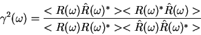
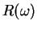
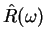
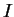
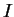
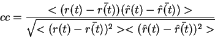

Next: Display Information Value and
Up: Application of the STRFPAK
Previous: Display Predicted PSTHs Window
Contents
The Display Predicted PSTH window gives us visual comparison
of the predicted response with the actual response.
To quantify the goodness of fit of the estimated STRF, STRFPAK implements
two measures: coherence and correlation
coefficient. The coherence is a function of frequency and is given by:

Here  and
 are actual and predicted neuron responses
at each temporal frequency,  . An overall goodness-of-fit estimate, ,
is obtained by integrating the coherence function. The lower bound of
is obtained if the noise follows a Gaussian distribution and the upper bound
is obtained if the neuron response is a Gaussian. For detailed derivation,
please refer to Hsu's
information theory paper(to be submitted).
. An overall goodness-of-fit estimate, ,
is obtained by integrating the coherence function. The lower bound of
is obtained if the noise follows a Gaussian distribution and the upper bound
is obtained if the neuron response is a Gaussian. For detailed derivation,
please refer to Hsu's
information theory paper(to be submitted).
Correlation coefficient( ) between
) between  and
and  is
calculated based on:
is
calculated based on:

Here and are actual and predicted neuron
responses. Since depends on the time bin that is used to
obtain from the PSTH, STRFPAK only
compares between similar time windows ![[*]](file:/usr/share/latex2html/icons/crossref.png) .
.
When all calculation are done, small ``Done Prediction''
window appears.
Next: Display Information Value and
Up: Application of the STRFPAK
Previous: Display Predicted PSTHs Window
Contents
2003-03-19